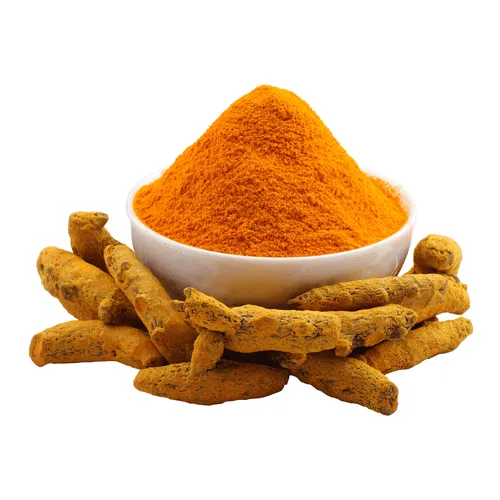

Red chili powder is a commonly used spice in many cuisines around
the world. While it can add a lot of flavor to dishes, it can also
have both positive and negative effects on the human body. Here
are some of the advantages and disadvantages of red chili powder:
896
5648

3 February, 2023
There is something about turmeric powder
Tumeric powder is a commonly used spice in many cuisines around
the world. While it can add a lot of flavor to dishes, it can also
have both positive and negative effects on the human body. Here
are some of the advantages and disadvantages of turmeric powder:
2311
4866
14 March, 2023
There is something about red cumin powder
cumin powder is a commonly used spice in many cuisines around the
world. While it can add a lot of flavor to dishes, it can also
have both positive and negative effects on the human body. Here
are some of the advantages and disadvantages of cumin powder: